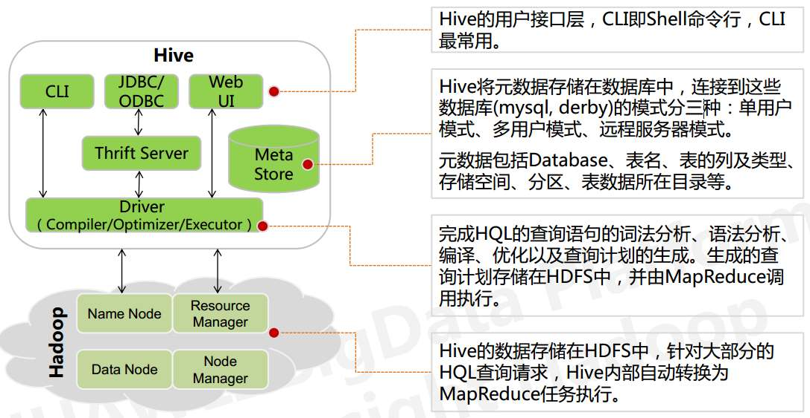

Hive基础
Hive是由Google实现并且开源的一个基于Hadoop的一个数据仓库工具，其可以将结构化的数据映射为一张数据库表，并且提供HQL（Hive SQL）查询功能。其底层数据存储在HDFS上，HDFS（Hadoop Distributed File System）是GFS（Google File System）的实现，是Hadoop项目的核心子项目，是分布式计算中数据存储管理的基础。Hive具有目前Hadoop上最丰富最全的SQL语法，也拥有最稳定的执行（但同时也最慢）。是目前Hadoop上几乎标准的ETL和数据仓库工具。
Hive的本质是将SQL语句转换为MapReduce任务运行，使得不熟悉mapReduce的用户很方便的利用HQL处理和计算HDFS上的结构化的数据，适用于离线的批量数据计算。实质就是一款基于HDFS的MapReduce计算框架，对于存储在HDFS中的数据进行分析和管理。
数据仓库之父比尔·恩门（Bill Inmon）在 1991 年出版的“Building the Data Warehouse”（《建 立数据仓库》）一书中所提出的定义被广泛接受——数据仓库（Data Warehouse）是一个面 向主题的（Subject Oriented）、集成的（Integrated）、相对稳定的（Non-Volatile）、反映历史 变化（Time Variant）的数据集合，用于支持管理决策(Decision Making Support)。
Hive特点
- 优点：
- 可扩展性,横向扩展，Hive 可以自由的扩展集群的规模，一般情况下不需要重启服务 横向扩展：通过分担压力的方式扩展集群的规模 纵向扩展：一台服务器cpu i7-6700k 4核心8线程，8核心16线程，内存64G => 128G
- 延展性，Hive 支持自定义函数，用户可以根据自己的需求来实现自己的函数
- 良好的容错性，可以保障即使有节点出现问题，SQL 语句仍可完成执行
- 缺点：
- Hive 的查询延时很严重，因为 MapReduce Job 的启动过程消耗很长时间，所以不能 用在交互查询系统中。
- Hive 不支持事务（因为不没有增删改，所以主要用来做 OLAP（联机分析处理），而 不是 OLTP（联机事务处理），这就是数据处理的两大类别）。
Hive和RDBMS的对比
| item | Hive | RDBMS |
|---|---|---|
| 查询语言 | HQL | SQL |
| 数据存储 | HDFS | Raw Device or Local FS |
| 执行器 | MapReduce | Executor |
| 数据插入 | 支持批量导入/单条插入 | 支持批量导入/单条插入 |
| 数据操作 | 覆盖追加 | 行级更新删除 |
| 处理数据规模 | 大 | 小 |
| 执行延迟 | 高 | 低 |
| 分区 | 支持 | 支持 |
| 索引 | 0.8版本之后加入简单索引 | 支持复杂索引 |
| 扩展性 | 高 | 有限 |
| 数据加载模式 | 读时模式 | 写时模式 |
| 应用场景 | 海量数据查询 | 实时查询 |
Hive架构

从图中可以看出Hive的内部架构由四部分组成：
用户接口：shell/CLI，jdbc/odbc， webui Command Line Interface
CLI，Shell 终端命令行（Command Line Interface），采用交互形式使用 Hive 命令行与 Hive 进行交互，最常用（学习，调试，生产）
JDBC/ODBC，是 Hive 的基于 JDBC 操作提供的客户端，用户（开发员，运维人员）通过 这连接至 Hive server 服务
Web UI，通过浏览器访问 Hive
跨语言服务：thrift server 提供了一种能力，让用户可以使用多种不同的语言来操纵Hive
Thrift是Facebook开发的一个软件框架，可以用来进行可扩展且跨语言的服务的开发，Hive继承了该服务，能让不同的编程语言调用Hive的接口。
底层Driver：驱动器Driver，编译器Compiler，优化器Optimizer，执行器Executor
Driver 组件完成 HQL 查询语句从词法分析，语法分析，编译，优化，以及生成逻辑执行 计划的生成。生成的逻辑执行计划存储在 HDFS 中，并随后由 MapReduce 调用执行。
Hive的核心是驱动引擎，其由四部分组成：
- 解释器：解释器的作用是将 HiveSQL 语句转换为抽象语法树（AST）
- 编译器：编译器是将语法树编译为逻辑执行计划
- 优化器：优化器是对逻辑执行计划进行优化
- 执行器：执行器是调用底层的运行框架执行逻辑执行计划
元数据存储系统：RDMBS MySQL
元数据，通俗的讲，就是存储在 Hive 中的数据的描述信息。
Hive 中的元数据通常包括：表的名字，表的列和分区及其属性，表的属性（内部表和 外部表），表的数据所在目录。Metastore 默认存在自带的 Derby 数据库中。缺点就是不适合多用户操作，并且数据存 储目录不固定。数据库跟着 Hive 走，极度不方便管理。
解决方案：通常存我们自己创建的 MySQL 库（本地 或 远程）
Hive 和 MySQL 之间通过 MetaStore 服务交互
执行流程：
HiveQL 通过命令行或者客户端提交，经过 Compiler 编译器，运用 MetaStore 中的元数 据进行类型检测和语法分析，生成一个逻辑方案(Logical Plan)，然后通过的优化处理，产生 一个 MapReduce 任务。
Hive的数据组织
Hive 的存储结构包括数据库、表、视图、分区和表数据等。数据库，表，分区等等都对 应 HDFS 上的一个目录。表数据对应 HDFS 对应目录下的文件。
Hive 中所有的数据都存储在 HDFS 中，没有专门的数据存储格式，因为 Hive 是读模式 （Schema On Read），可支持 TextFile，SequenceFile，RCFile 或者自定义格式等
只需要在创建表的时候告诉 Hive 数据中的列分隔符和行分隔符，Hive 就可以解析数据
Hive 的默认列分隔符：控制符 Ctrl + A，\x01
Hive 的默认行分隔符：换行符 \n
Hive 中包含以下数据模型：
database：在 HDFS 中表现为${hive.metastore.warehouse.dir}目录下一个文件夹
table：在 HDFS 中表现所属 database 目录下一个文件夹
external table：与 table 类似，不过其数据存放位置可以指定任意 HDFS 目录路径
artition：在 HDFS 中表现为 table 目录下的子目录
bucket：在 HDFS 中表现为同一个表目录或者分区目录下根据某个字段的值进行 hash 散 列之后的多个文件
view：与传统数据库类似，只读，基于基本表创建
Hive 的元数据存储在 RDBMS 中，除元数据外的其它所有数据都基于 HDFS 存储。默认情 况下，Hive 元数据保存在内嵌的 Derby 数据库中，只能允许一个会话连接，只适合简单的 测试。实际生产环境中不适用，为了支持多用户会话，则需要一个独立的元数据库，使用 MySQL 作为元数据库，Hive 内部对 MySQL 提供了很好的支持。
Hive 中的表分为内部表、外部表、分区表和 Bucket 表
内部表和外部表的区别：
删除内部表，删除表元数据和数据
删除外部表，删除元数据，不删除数据
内部表和外部表的使用选择：
大多数情况，他们的区别不明显，如果数据的所有处理都在 Hive 中进行，那么倾向于 选择内部表，但是如果 Hive 和其他工具要针对相同的数据集进行处理，外部表更合适。
使用外部表访问存储在 HDFS 上的初始数据，然后通过 Hive 转换数据并存到内部表中
使用外部表的场景是针对一个数据集有多个不同的 Schema
通过外部表和内部表的区别和使用选择的对比可以看出来，hive 其实仅仅只是对存储在 HDFS 上的数据提供了一种新的抽象。而不是管理存储在 HDFS 上的数据。所以不管创建内部 表还是外部表，都可以对 hive 表的数据存储目录中的数据进行增删操作。
分区表和分桶表的区别：
Hive 数据表可以根据某些字段进行分区操作，细化数据管理，可以让部分查询更快。同 时表和分区也可以进一步被划分为 Buckets，分桶表的原理和 MapReduce 编程中的 HashPartitioner 的原理类似。
分区和分桶都是细化数据管理，但是分区表是手动添加区分，由于 Hive 是读模式，所 以对添加进分区的数据不做模式校验，分桶表中的数据是按照某些分桶字段进行 hash 散列 形成的多个文件，所以数据的准确性也高很多